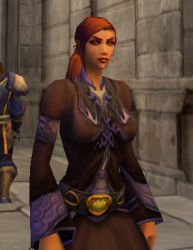

Récits Légendes de Kirin Tor Personnages Célébrités Guildes
Outils Calendrier Calendrier Illustré Mod d'interface
Informations Historiens FAQ Liens Crédits
Les légendes de Kirin Tor
Axel
Mail : ==> Afficher les personnages de Axel
Brynhild
 Age : 629 ans
Age : 629 ans
Sexe : Femme
Race : Elfe
Faction : Alliance
Formation : Chasseur
Description : Un silence de mort plane au dessus du mont Hyjal. La fin de la bataille fut pour moi comme un réveil après un rêve agité. Je me tenais debout au milieu de cadavres sanguinolents de démons et d'alliés. Mon arc était brisé et ma dague couverte de sang. Mes gants portaient encore les traces de morsures des Fellhunters. Mes oreilles sifflaient. Enfin, mes muscles me faisaient atrocement souffrir. Je n'ai pourtant de ce jour que des souvenirs fugaces et de vagues impressions : l'odeur du sang, les cris des mourants, le fracas des armes, etc Tout ce que je sais, c'est que la Légion Ardente fut défaite à jamais.
Plus d'infos sur Brynhild >>>
Lire les 3 récits de Brynhild >>>
Gethsemani
Age : 22Sexe : Femme
Race : Humain
Faction : Alliance
Formation : Démoniste
Description : Comme vomi des entrailles de la Terre, une horde de créatures répugnantes déversa sa pourriture sur notre paisible ville d'Andorhal. Tout d'abord, la Peste emporta les plus faibles. Puis, l'armée du Fléau se chargea de brûler nos maison et d'exterminer ceux que la maladie n'avait pas touché.
Rare furent ceux qui, comme moi, survécurent à la destruction d'Andorhal. Mais pour ces gens là, la vie ne fut jamais plus la même. Dans mon cas, j'ai vu, de mes yeux vu, ma grande soeur mourir de la peste après une agonie de 3 jours. Je l'ai vu revenir d'entre les morts, égorger ma mère et se nourrir de son cadavre. J'ai vu mon père broyé par une de leurs abominations. J'ai vu mon village en flamme dans lesquelles dansaient ces créatures cauchemardesques, fières d'avoir détruit nos vie,
Quatre ans après, il ne passe pas une nuit sans que je ne revivre ces événements en rêve.
Plus d'infos sur Gethsemani >>>